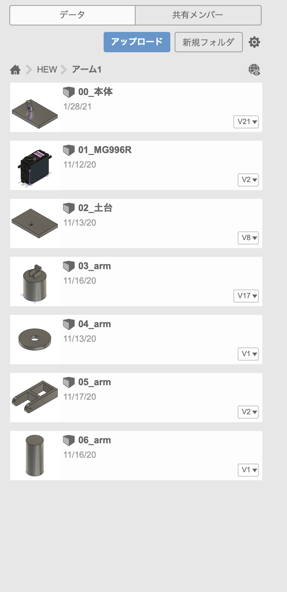
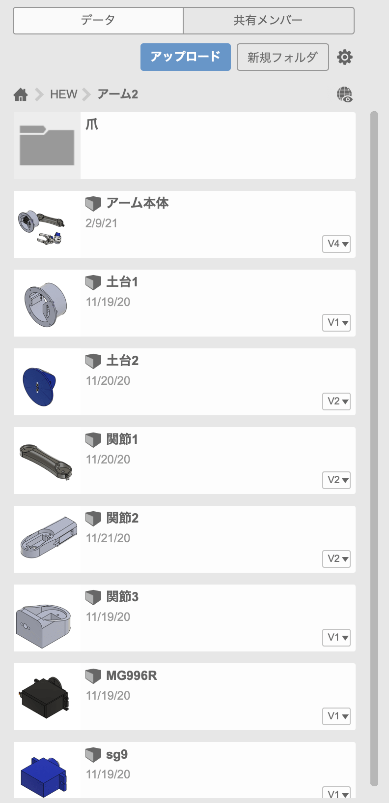
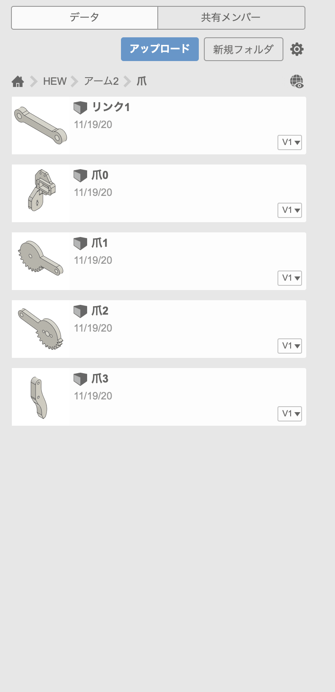
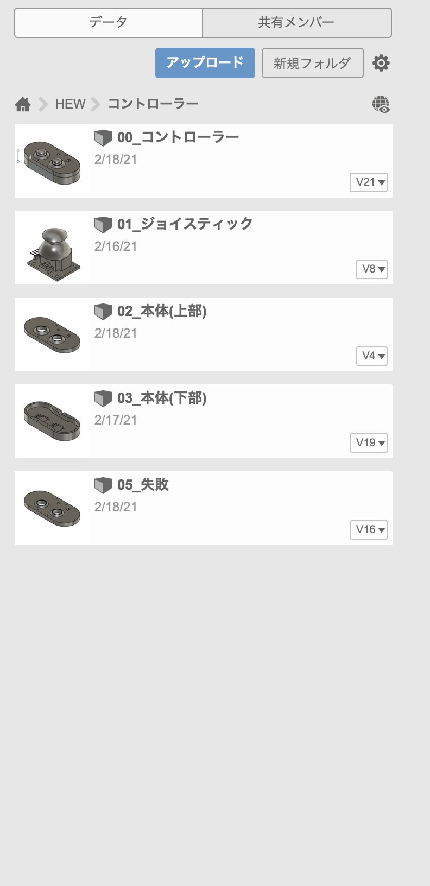
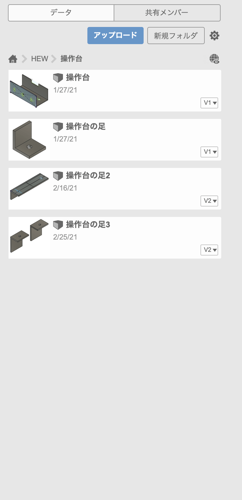
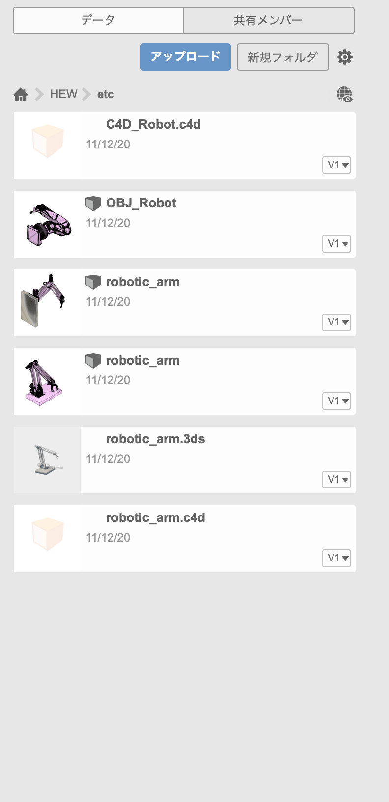
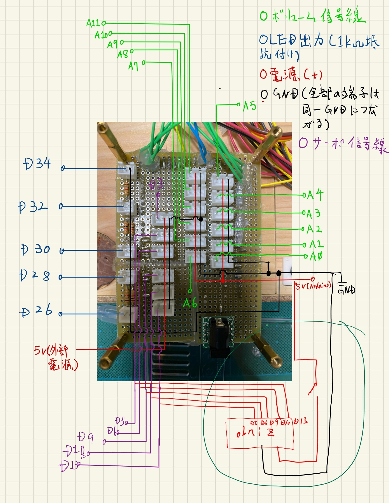
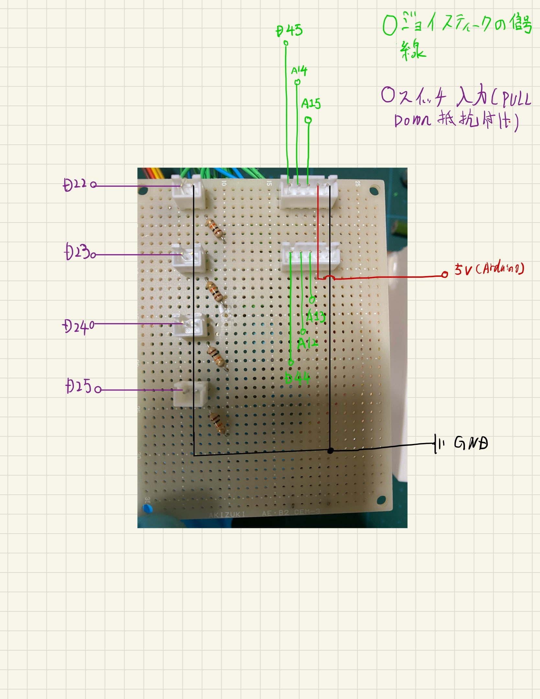

3Dモデリングで設計された汎用ロボットアーム！
3/4~2021
カテゴリー：#Event
プロジェクトの背景
今回のHEWではグループメンバ各個人が制作したいものを組み合わせて一つの作品を作ることを目標に制作しました。 役割分担に重点を置き、一人は詳細な3Dモデルの制作, 二人目は操作方法の策定, 三人目はプログラムの策定, これらを軸にしそれぞれが意見を出し合い、個人の実力を一番発揮できるところでそれぞれが個々に制作する。また相手の意見をできるだけ取り入れどうしたら実現できるかに注視しながら作業し、その結果できるだけアイディアに忠実な制作物が完成しました。
作品説明
| 基本情報 | |
|---|---|
| 出展者番号 | RO42-008 |
| 作品名 | 汎用ロボットアーム |
| グループ名 | ESP32 |
| メンバーリスト | 佐藤 航 / 洪 イ昕 / 兒玉 裕貴 |
| 作品アピール | 5つの操作方法, 3Dデザインを使用したロボットアームの制作, 自作プリント基板の制作 |
私達は汎用ロボットアームすべての部品を3Dモデリングで制作しました。このロボットアームの大きな特徴は関節を各所に配置することにより最大5軸ロボットアームとして起動します。主な動作としてはモノを掴む離すはもちろん左右前前後お好みの位置へ移動させることが可能です。また、様々な操作方法を実装したので操作者の好みの操作方法で動作できます。
このロボットアームのコアは Arduino Mega2560 を使用しています。なぜ Arduino UNO ではなく Mega を使用したか,これは単純にPin数の制限を受けたからです。このロボットアームの使用しているPin数は電源とGNDを除きおおよそ36Pin. 今回使用しなかった Arudino UNO のPin数は ディジタルPin 14Pin, アナログ入力 6Pin 総合計20Pin, それに引き換え ArduinoMega2560 は ディジタル 54Pin( 14本は PWM 使用可能), アナログ入力 16Pin, 総合計70Pin, このピン数はとても魅力的でした。
操作方法は全部で5つあります。 ジョイスティックによるリモコン操作, ボリュームによるつまみ操作, 1つの機体で他の機体を連動させて動かせるマスタースレーブ操作, 動作を記録し再生する位置記憶動作, ネットワーク経由でWeb操作をするIot操作, それぞれが各々で作りたかった操作方法で一切の妥協なく制作しました。 次のアピール項目ではこの操作方法の説明とその他取り組んだことについて説明していきます。
アピールポイント
アピールポイントとして5つの操作方法, 3Dデザインを使用したロボットアームの制作, 自作プリント基板の制作, の3つがあります。
操作方法
- ジョイスティックによる操作
- ボリューム操作
- マスタースレーブ操作
- 位置記憶操作
- IoT 操作
ジョイスティックによる操作を実装した理由はやはり慣れ親しんだ操作感で操作できることにあります。3DCADソフトでの設計によりパーツの交換、修正、複製などが素早く行え誰でも気軽にモノづくりを体験することが可能になります。

本来このボリューム操作を完成形とし、HEWへ出典するつもりでしたが皆でアイディアを出し合っているうちにいつの間にか他の操作方法が出来上がっておりすべての操作方法の原点となった機能です。
マスタースレーブ操作ではマスター機の関節に組み込んだボリューム抵抗を動かし 操作対象となるスレーブ機ロボットアームのモータへ 角度として受け渡すことで実現しました。
位置記憶操作はデータ構造とアルゴリズムに力を入れて制作しました。これは人間の動作を模倣し継続的に繰り返すことができます。この位置記憶操作があればシンプルな動作はすべて任せることが可能です。

操作にはobnizOS(オブナイズ)を使用しました。obnizOSを使用することでIoT操作で一番面倒なweb Server通信のプログラム作成が不要でネットワークコネクションを作るだけで気軽にマイコンを制御できます。
このobnizOSは主にhtmlとjavascriptでの記述で操作ができるため少しだけWebの知識があれば誰でもモノづくりを体験することが可能です。
今回これらを活用しアームの操作軸となるサーボモータの制御をWeb経由のスライダーコントロールで操作出来るようにしました。
See the Pen RO42-008 by hirotaka42 (@hirotaka42) on CodePen.
アピールポイント2
- 3Dデザインを使用したロボットアームの制作
- 基板配線
- プリント基板の制作
3DCADソフト Fusion360 を使用し3Dモデルデータを作成,3Dプリンタで印刷,すべての部品を手作りで制作しました。その過程で穴の位置の設置ミスや印刷クオリティの向上で四苦八苦することがありました。
|  |  |  |
|  |  |  |
配線については電源系統を一つにまとめできるだけ簡素化しました。また配線の再配置など柔軟に対応するべく広く一般的に使用されているJST規格のXHコネクタを採用。
|  |  |
今回残念ながら発注までは間に合いませんでしたがプリント基板を制作しました。制作した理由としては配線が多いことによる配線の付け間違えやコネクタの用途不明防止のためです。できるだけ配線をまとめれるように接続アダプタ用の基板も制作しました。
感想
今回のHEWは例年と違いオンラインでの制作が多かったためお互いの進捗確認がうまく取れずとても苦労しました。ですが精一杯自分たちに納得の行く作品ができたのでとても良い経験になりました！
Photo
写真・動画